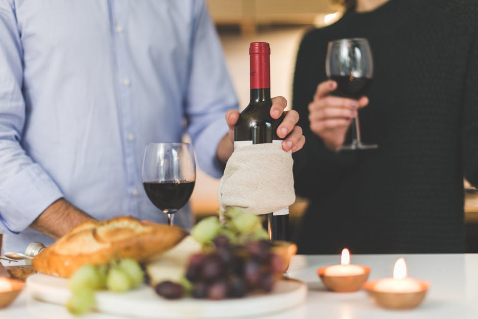
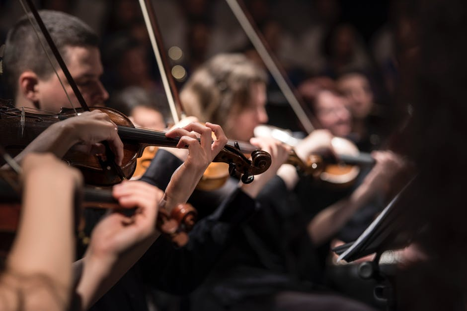
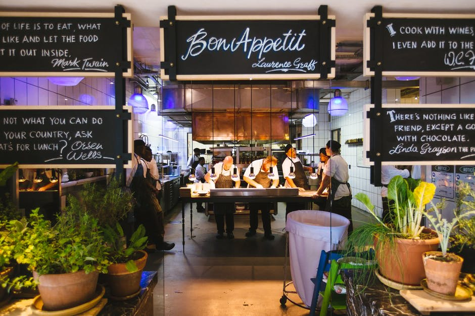
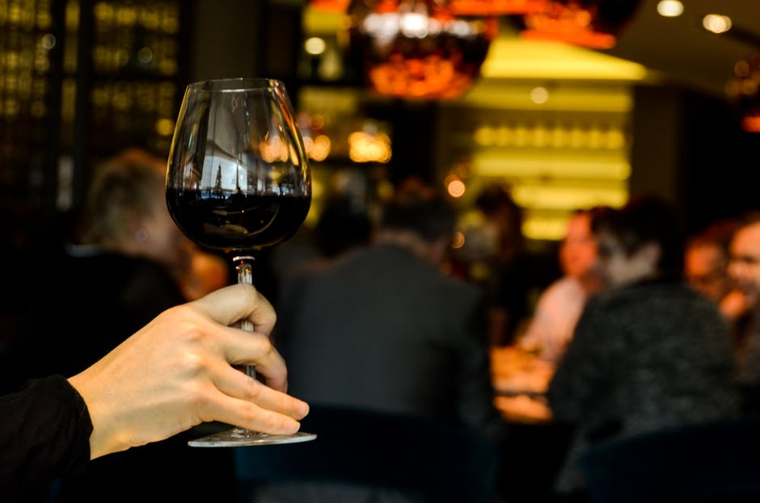
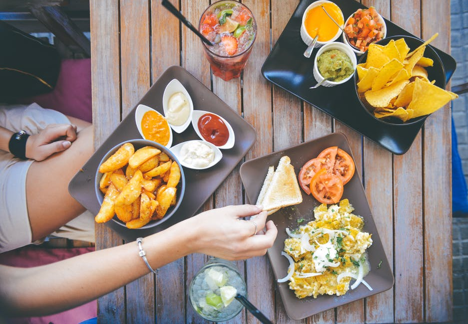

如何品味西餐文化

点击图片查看当您走进咖啡馆或西餐馆时，服务员会先领您入座，待您坐好后，首先送上来的便是菜谱。菜谱被视为餐馆的门面，老板也一向重视，采用最好的材料做菜谱的封面，有的甚至用软羊皮打上各种美丽的花纹，显得格外典雅精致。 如何点好菜?这里介绍一点经验之谈，那就是打开菜谱后，看哪道菜是以店名命名的，这道菜可千万不要错过。因为那家餐馆是不会拿自己店的名誉来开玩笑的，所以他们下功夫做出的菜，肯定会好吃的，这道招牌菜大家一定要点。 另外要特别说明的一点是，不要以吃中餐的习惯来对待西餐的点菜问题：即不要对菜谱置之不理、不要让服务员为你点菜。
如何品味西餐文化

点击图片查看豪华高级的西餐厅，通常会有乐队，演奏一些柔和的乐曲，一般的西餐厅也播放一些美妙典雅的乐曲。但，这里最讲究的是乐声的“可闻度”，即声音要达到“似听到又听不到的程度”，
如何品味西餐文化

点击图片查看吃西餐讲究环境雅致，气氛和谐。一定要有音乐相伴，桌台整洁干净，所有餐具一定要洁净。
如何品味西餐文化
点击图片查看
就是说和谁一起吃西餐，这是要有选择的。吃西餐的伙伴最好是亲朋好友或是趣味相投的人。吃西餐主要是为联络感情，最好不要在西餐桌上谈生意。
如何品味西餐文化

点击图片查看这一点指的是“吃相”和“吃态。既然是吃西餐就应遵循西方的习俗，勿有唐突之举，特别是在手拿刀叉时，若手舞足蹈，就会“失态”。 刀叉的拿法一定要正确：应是右手持刀，左手拿叉。用刀将食物切成小块，然后用叉送入口内。一般来讲，欧洲人使用刀叉时不换手，一直用左手持叉将食物送入口内。美国人则是切好后，把刀放下，右手持叉将食物送入口中。
如何品味西餐文化

点击图片查看一位美国美食家曾这样说：“日本人用眼睛吃饭，料理的形式很美;吃我们的西餐，是用鼻子的，所以我们鼻子很大;只有你们伟大的中国人才懂得用舌头吃饭。”